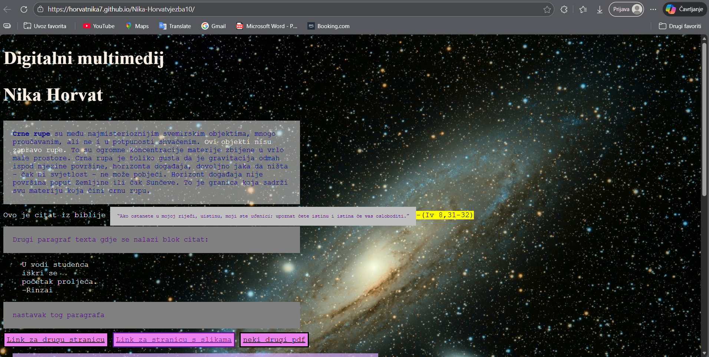
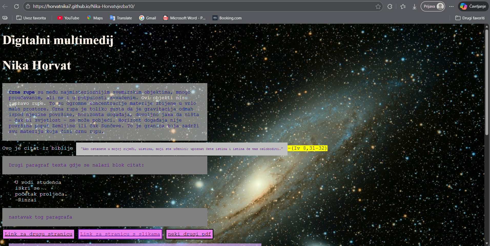

5. VJEŽBA - retuširanje (1.-2.)
Ovo nam je bio uvod u Photoshop naučili smo koristiit osnovne alate poput: (Lasso Tool) , (Burn/Dodge brush, Levels, Brightness/Contrast), (Clone Stamp, Heal...)
6. VJEŽBA - koloriranje (3.-4.)
Naučili smo radidi "Mask i Ajusment" slojeve i kako napraviti kolorizaciju putem kanala.
7. VJEŽBA - fotomontaža (5.)
Kombiniranjem više fotografija te korištenjem novih alata za izrezivanje/selektiranje, spajali smo različite elemente drugih slika u jednu.
Naučili smo tehnike blendanja i mjenjanja tonova slike kako bi se svi novi djelovi što bolje uklopili.

PIXEL GRAFIKA
Drugi projekni zadatak se fukusirao na stvaranje nove slike s različitim elementima slično kao iz vježbe 7. Trebali smo također dodati sebe u scenu.


 

8. VJEŽBA - montaža kinemagrafa (1.-2.)
U programu Premiere Pro i uz pomoć Photoshopa, napravila sam kinemagraf. Kinemagraf je ideo isječak čija se sekvenca ponavlja u beskonačnost, najčešće u GIF formatu, a u kompoziciji spaja pokretnu i statičnu grafiku (sliku i video). Dok je većina grafike statična, samo mali dio je animiran (pokretan).
9.VJEŽBA - video montaža (3.-4.)
Također smo u Premiereu Pro naučili montirati vedeo. Rezali i spajali smo video isječake iz više izvora, dodavali video efekte, brisali i dodavali zvuk te dodali statičan i pokretni text.
10./11.VJEŽBA - izrada web stranice u HTML i CSS jezicima//objava web stranice online (5.-6.)
U Notepad ++ sam naučila kako napraviti smoju html datoteku de kako ju ureditimjenali smo boju teksta, izgleda teksta da bude istaknut i slično, spajali smo više html stranica te ih na kraju objavili na GitHub.